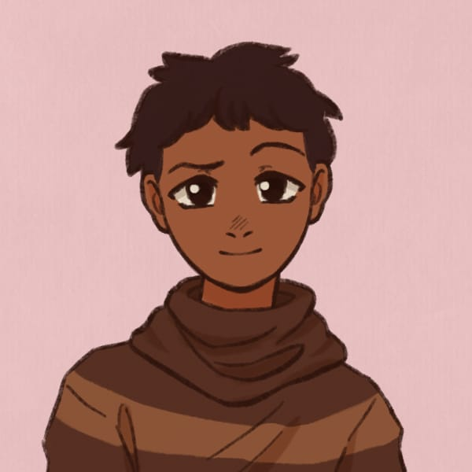

Sobre nosso Projeto
Esta website foi desenvolvido exclusivamente para fins acadêmicos e pedagógicos. O nosso objetivo principal é trazer dados estatísticos reais e relatos importantes sobre a saúde mental no cotidiano, podendo servir como uma ferramenta de conscientização escolar e uma forma de podermos conscientizar mais pessoas sobre como é importante a Saúde mental.
Integrantes do Grupo
Daphne Giovanna Rosas Dos Santos
você não precisa enfrentar tudo sozinhoFunção: Desenvolvimento HTML/CSS
Turma: 148-curso de informática
Nicole de Castro Freire
Não sinta medo de falar aquilo que está lá no fundo.Função: Desenvolvimento HTML/CSS
Turma: 148-curso de informática
Marcelo Lucas Lopes

Pedir ajuda não é fraqueza, mas sim um sinal de força.Função: Pesquisa e coleta de fotos
Turma: 148-curso de informática
Anna Vitoria Dias Assman
Priorizar a saúde mental é investir em uma vida mais leve e felizFunção: Pesquisa
Turma: 148-curso de informática
Gabriely Santos Silva
A dor que ninguém vê também precisa de cuidado.Função: Pesquisa
Turma: 148-curso de informática
Instituição de Ensino: Instituto Federal de Educação, Ciência e Tecnologia de São Paulo, Campus Cubatão
Orientador(a): Prof. Nelson
Ano Letivo: 2026